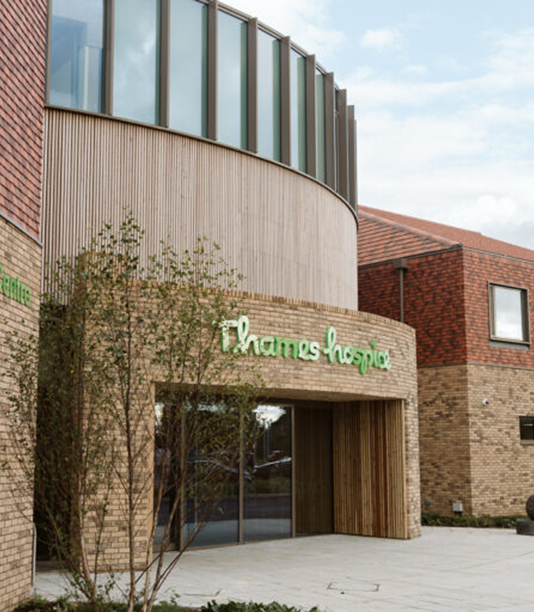
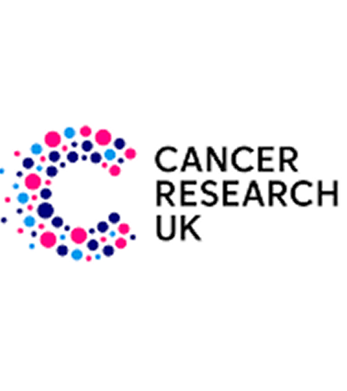
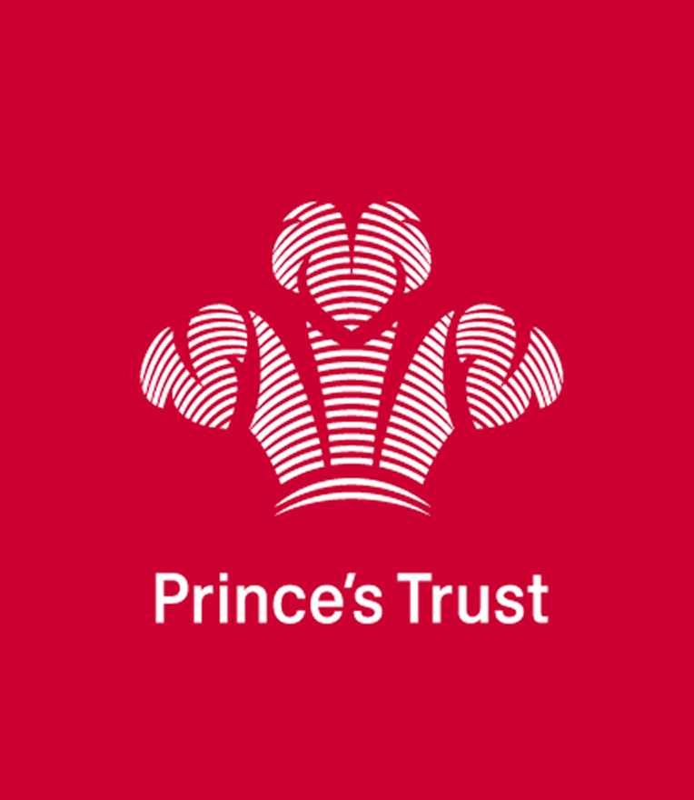
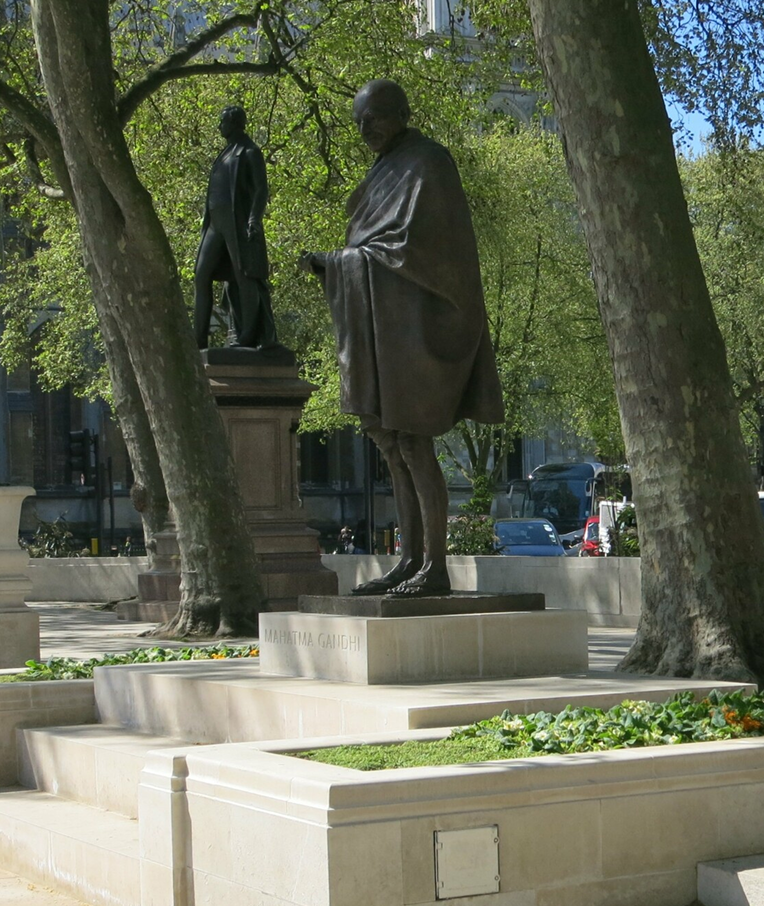
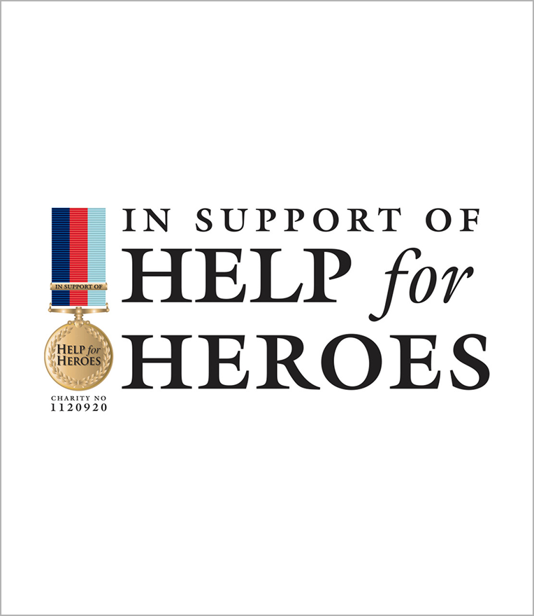

Lord Rami is passionate about building bridges between different communities, fostering understanding, and promoting social cohesion.
Learn MoreLord Rami Ranger’s philanthropic efforts reflect a deep commitment to giving back, improving lives, and building a more inclusive and compassionate world.

The Lord Rami Ranger FRSA Centre for Graduate Entrepreneurship: In a major philanthropic gesture, Lord Rami donated £250,000 to London South Bank University, establishing a hub for aspiring entrepreneurs.

Supporting Student Facilities: His £200,000 donation to the University of West London funded the creation of a new pavilion for students.

The Pakistan, India & UK Friendship Forum: Founded to unite communities through dialogue and cooperation.
Hindu Forum of Britain: Helping unite Hindu organisations under one collective voice.

Thames Hospice: £100,000 donation supporting compassionate end-of-life care.

Cancer Research UK: £50,000 contribution towards life-saving research.

The Prince's Trust: Supporting young people with £150,000 donation.

Gandhi Memorial Foundation Trust: Supporting the Gandhi statue in Parliament Square.
Combat Stress: Supporting veterans’ mental health with £25,000 donation.
AIDS and Cancer Research: Helped raise £100,000 for medical research.

Help for Heroes: Raised £25,000 to support wounded veterans.
Indian Gymkhana: £125,000 contribution for athlete accommodation facilities.
“Philanthropy isn’t just about giving money — it’s about creating opportunities and inspiring others to succeed.”